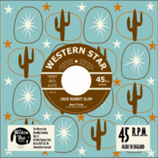

Jack Rabbit Slim - Next Time / Blood Sweat 'n' Fears (Single, 2015)
01 - Next Time (1:56)
02 - Blood Sweat 'n' Fears (1:39)
© Western Star Recording Company :: [WSRC 702]
Notes
Review
102/366 (Project 366)
Very attractive and stormy tunes in general. But these are not the most revealing songs in the context of their entire discography. However, these compositions reveal one side of the rather specific aspects of their style. This is very characteristic of Jack Rabbit Slim, quite furious but still melodious songs. Authentic and at the same time quite modern. Cool arrangements and balanced sound of musical instruments. Diversity and originality.
Both songs are in a relative twangy and rocking motive. First track "Next Time" is even a bit surfin' Rockabilly tune. A bit wild, slightly frantic, saucy even. Formidable tone of instruments and catching voice. Second track "Blood Sweat 'n' Fears" is notable for its speed and fury. Rocking and rolling with scratchin' guitar, thrumming and pushy sound, with ecstatic and bogey feelings. Emotionally, tirelessly, energetically. Which, in principle, can be said about the first song too. And in general, it applies to style of Jack Rabbit Slim. Even when it's more mild and boppin' tunes.
Songs perfectly create a feeling of coolness, rigidity, determination. Rock'n'Roll and Rockabilly. Firmly. I especially like that there is a desire to move and enjoy the sound of the songs of this band. Really always impressive.